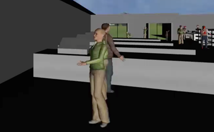
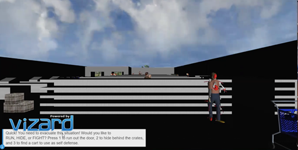

The goal of this project is to build a first-person shooter game called Side Effects. Side Effects is a first-person shooter game with a psychological horror-infected theme implemented to it. The main idea behind the game is that several years after receiving the COVID-19 vaccination, patients will either turn into infected like zombies or will have serious side effects which will make them hallucinate. The main character will be a nurse that will have hallucinogenic attacks throughout the game. The goal of the game will be to cure these infected patients using a vaccine that utilizes DNA synthesis technology to cure these patients. One of the objectives of the game is to survive and find more doses of the vaccine in the asylum. Most of this game module is built in Unity and 3ds Max.
Currently there are not many videogames in the market which have a psychological horror theme implemented to them. Companies like Xbox game studios, Amazon Lua, Google Stadia (when it existed), and Steam are actively seeking independent developers to make video games like these for their platforms and implementing a VR capability to them increases their market value since there are not many horror games (especially psychological horror games) in the market which have a VR capability associated to them.
The goal of the project is to build a simulation of a law enforcement traffic stop from the driver and occupants' point of view. It encourages the user to experience the event first hand and to make decisions that may escalate or de-escalate the situation. Traffic stops are a routine operation of law enforcement. Most common interactions between a police officer and a civilian. Traffic stops are highly risky due to the uniqueness of each situation. A stop initiated for a simple reason may quickly escalate to a life and death situation.
This virtual reality simulation is developed to assist drivers and law enforcement with current traffic procedures. It leverages the futuristic capabilities of immersive virtual reality experiences. The virtual environment is a realistic replication of street or highway roads, including other drivers, pedestrians, traffic signs and buildings.
The goal of this project is to create a fire simulation fire drill. This simulation creates a sense of virtual reality presence for a young fire fighter. Real world fire drill is costly as it would require a physical building being destroyed and negative environmental impact. This simulation saves time and money as well as the environment as it can be accessed anywhere at any time.
This application will be useful for the firefighters in training themselves and to gain confidence to face a real fire hazardous situation. This simulation will provide an environment of a fire hazardous event whereas saving as many people as possible within a short time would be the goal. Playing this game would basically help especially firefighters that are new in to their career to build self-confidence and tap into their fire senses before they face a real hazardous event.
The goal of this project is to create a zombie game where the player has to escape the zombie attack and try to reach the helicopter to win. Health bar is used to track if the player has been attacked by the zombie, if so then the health bar reduces. In case the player gets stuck he can press T to get evacuated. As the game designed involves a lot of hypothetical situations, virtual reality is the best option to design it. This game is extremely fun to play and is definitely a stress buster. The purpose of this game is to enjoy the game and have fun.
The environment resembles a haunted place. The environment is mostly wilderness and it includes mountains, trees, sea and dust storms to make it look more like a haunted place. The abandoned houses have been added to create a feel in the game. Terrain was "painted" onto the plane with a preview package. This package allows us to use painting tools to elevate and depress the ground, apply textures with discretion, and paint any prefab tree available in the scene.
Project 5: C++ Arithmetic DDR (Dance Dance Revolution)
Students: Ibeawuchi Anokam, Ike Akujobi, Uchenna Ndolo
(Project Report) Presentation
The goal of our project is to teach students how to apply the C++ arithmetic precedence rule with the use of an arcade-style Dance Dance Revolution (DDR) game template. From our experience, many students have had an issue learning and implementing different rules for C++. One particular concept that students struggle with is understanding the C++ arithmetic precedence rules. This project will focus on developing a Unity application.
The game environment is set up as a Karaoke bar where the main player will be placed on stage to perform a dance routine. The player and other agent models were imported with the use of the Unity Asset Store and SketchFab.com
The goals of this project is to demonstrate the evacuation procedures in the event of a "Covid-zombie" attack. The anticipation was to demonstrate how a customer could evacuate a sudden hostile situation. We assumed the customer would have three options; to run out of the building, to hide behind objects (crates in our case), or to use an object to fight in self-defense. The plot of the attack was a grocery store. The grocery store is located in a mini city. The models used to create the mini city and the grocery store, were derived from Google Sketch-up. The target audience for this simulation, is anyone in a building who needs to escape. Ideally, in any hostile situation, the person has the option to run, hide, or fight. Though these are relatively "scary" conditions, we chose to present the information with a satire approach to lighten the mode. The real-world application for this project could be a grocery store owner who takes pride in the assurance that his customers are aware of their escape options in the event of an attack.


Previous Year Projects for Virtual Reality Class at BSU


{kind=link}
{kind=link}
{kind=link}
{kind=link}
{kind=link}
{kind=link}
{kind=link}